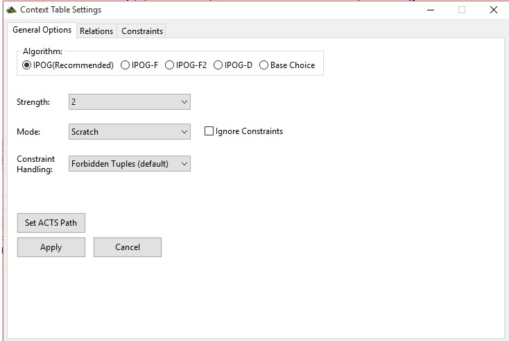

Context Table View
In the Context Table view you can generate a new Context Table, based on the currently selected control action and their linked variables.
To generate a new Table, just select a control action and press the "Generate-Button", which looks like this:

This will generate the Table with default Options. If you don't want to generate the Table with default Options, press this Button:

Settings
This will open the Settings Window, which contains three tabs. The first one looks like this:

General Options
Here you can set the Algorithm.
From first to last: the first one is for rather small systems(<10 params), the second and third are for medium sized systems (between 10 and 20 Parameters).
The Fourth Algorithm is for large Systems (more than 20 Parameters). Base Choice is a special one-way Algorithm, which is also for small Systems.
The Strength determines, how often the Parameters should be checked against each other. The only Restriction here is, you cannot take a strength > than the number of Parameters.
You should only choose mixed Strength, if you are going to set some Relations in the Relations-Tab.
The Ignore Constraints checkbox is pretty self explanatory. The last Dropdown will only have an effect, if you don't click on "ignore constraints".
There are two options available, which will change the way of the Algorithm to handle the constraints, this can affect the speed, but not the outcome.
Relations
If you change the Tab to "Relations" you can choose the test-strength for some groups and pairs of Parameter individually, by selecting them, then giving them the desired strength.
In Order for this to work, make sure you selected mixed-strength in the "General Options Tab".

Constraints
If you want to set some Constraints, you can use the Editor on the right side of the Window.
Constraints can be written as some boolean expressions, like "Process Value" < 10, or "Process Value1" != "Process Value2".
Make sure to write the names of the Process Values exactly like you did in XSTAMPP, or else it won't work.
If you click on the "Add Constraint" Button, the constraint gets added, if you press apply, the Algorithm will start with the given Settings and Constraints.

Context Table
If you are done generating all of your context Tables, you can start editing them. If you want to remove an Entry, select it, and click on the "delete entry button":

If you want to generate a single entry, press the "add button":

This will create an empty column, just click into the cells and customize the entry.
This way you can edit any entry!
To verify your entrys for any logical mistakes or some redundancy you can press the "verify-button". It will mark the affected columns red if it finds any errors:

Mark every column that you think is hazardous in their specific context, to proceed to the "refined safety view".
Please do not forget, the context table view has two tabs - "provided" and "not provided", make sure to choose the right context!